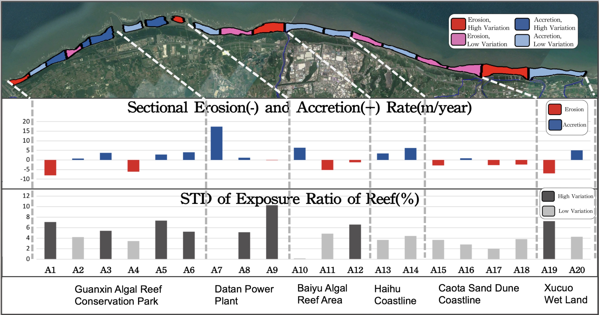
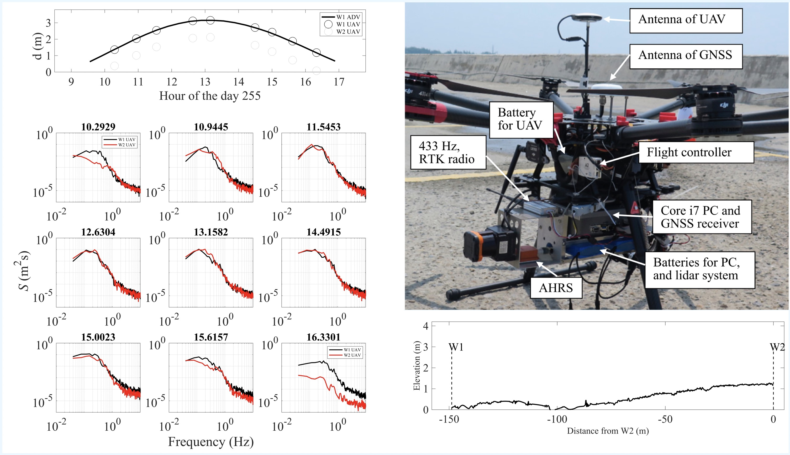

Satellite and Global Datasets
In this work, I am interested in using satellite and Argo dataset to estimate how much global mesoscale energy is dissipated by bottom drag. Some keypoints:
- The first time using satellite and Argo dataset to estimate mesoscale energy dissipation.
- Use EOF vertical structures from GLORYS12 dataset (Jean-Michel et al., 2021) to reconstruct near-seafloor EKE.
- Global bottom drag dissipation is $O.19\ \mathrm{TW}$, which is too small to dissipate the $1\ \mathrm{TW}$ of mesoscale energy input. (We are doing uncertaintiey estimates, but we believe the error for EKE uncertainties are far smaller than the parameterization.)
Nearshore Dynamics
I was involved in a coastal monitoring project in Taoyuan, Taiwan. We investigate the seasonal variation of the sand coverage and the exposure rate of the reef.
I was involved in a UAV LIDAR system development (Hunag et al., 2018). This system can be used to measure wave, tides, wave energy dissipaiton, and bottom roughness in the land topography.